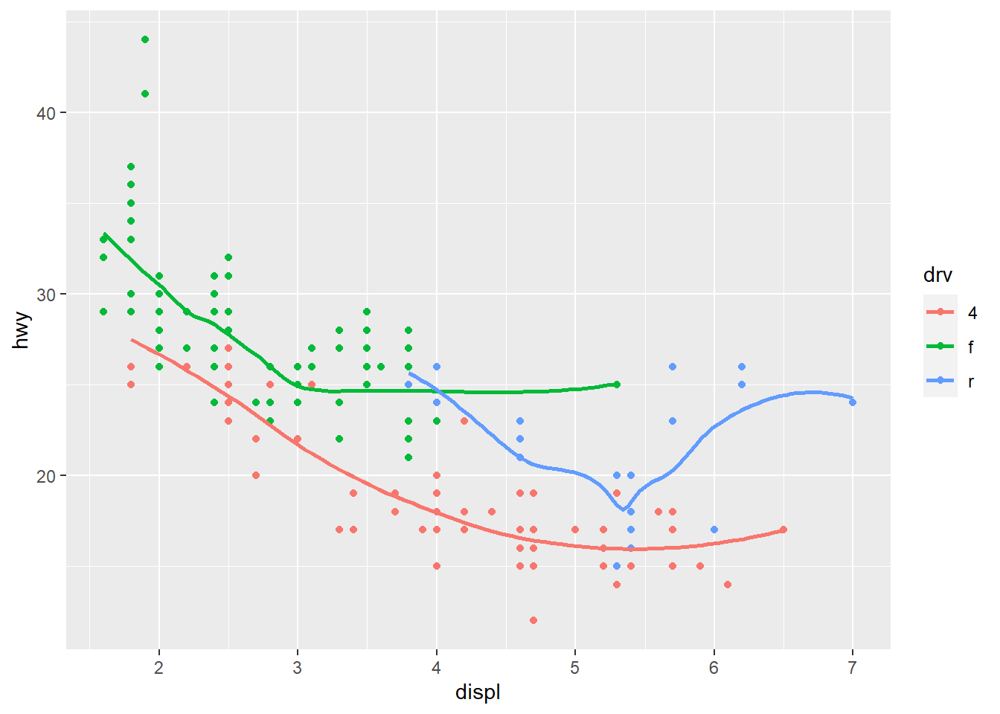
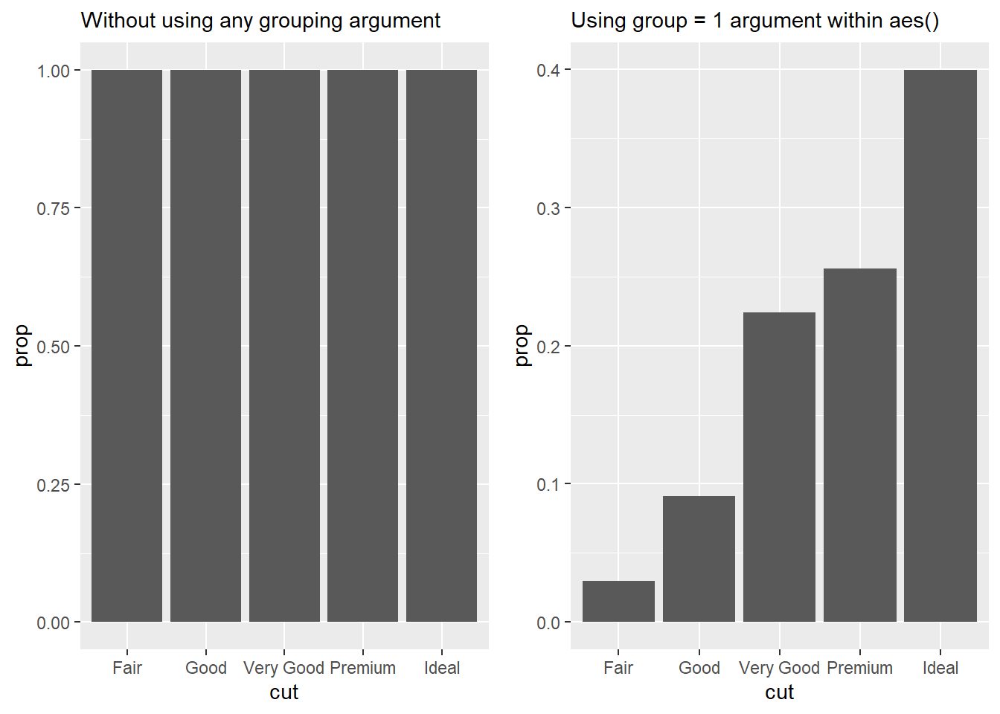
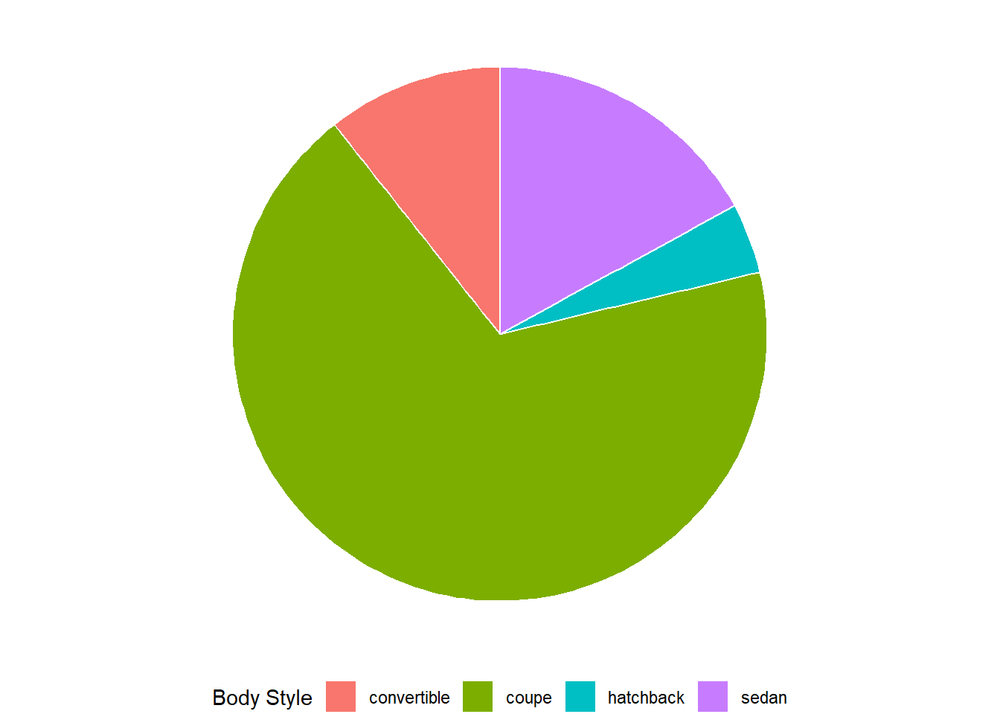

library(tidyverse)
library(gt)
data("mpg")
data("diamonds")Chapter 10
Layers
Important Points:
“The greatest value of a picture is when it forces us to notice what we never expected to see.” — John Tukey
ggplot2will use maximum 6 shapes at a time. The 7th shape is treated as a missing value.Using
alphaaesthetic for a discrete variable is not advised.The shapes used in
ggplot2are as follows(Wickham 2016) :--
Shapes available to use in ggplot2. The best place to explore
ggplot2extensions and graphs is the ggplot2 extensions gallery.Best place to search for and understand the
geomswithinggplot2is ggplot2 Function Reference.
10.2.1 Exercises
Question 1
Create a scatter-plot of hwy vs. displ where the points are pink filled in triangles.
The scatter-plot is displayed in Figure 1 .
mpg |>
ggplot(aes(x = hwy, y = displ)) +
geom_point(shape = 24, fill = "pink") +
theme_bw()
Question 2
Why did the following code not result in a plot with blue points?
ggplot(mpg) +
geom_point(aes(x = displ, y = hwy, color = "blue"))The mistakes in this code produces a wrong plot as shown in Figure 2 .
ggplot(mpg) +
geom_point(aes(x = displ, y = hwy, color = "blue"))
The code will not result in “blue” points because the argument color = "blue" is within the aesthetics brackets, i.e., aes(). This is because this treats color as an aesthetic to be mapped to a variable. And, ggplot2 starts looking for a variable called blue which does not exist. Accordingly, it produces a scatter plot which shows legend of color, with a variable called “blue”.
The corrected code and results are displayed below in Figure 3 .
mpg |>
ggplot() +
geom_point(aes(x = displ, y = hwy),
color = "blue") +
theme_bw()Question 3
What does the stroke aesthetic do? What shapes does it work with? (Hint: use ?geom_point)
The stroke aesthetic controls the width of the border of the points in the geom_point . It works with all the shapes, as I tried, but it would work best with shapes 21, 22, 23 and 24 as shown below :---
mpg |>
ggplot() +
geom_point(aes(x = displ,
y = hwy,
stroke = displ/2),
shape = 22) +
theme_bw()
Question 4
What happens if you map an aesthetic to something other than a variable name, like aes(color = displ < 5)? Note, you’ll also need to specify x and y.
In this case, I expect that the aesthetic color will be mapped to a logical variable, that can have two values, either TRUE (mapped to one colour) or FALSE (mapped to a second colour). Thus, the logical expression gets treated like a factor with two levels. The legend to the plot shows the two levels of that factor. For example:---
mpg |>
ggplot(aes(x = displ,
y = hwy,
color = displ < 5)) +
geom_point() +
theme_bw()
10.3.1 Exercises
Question 1
What geom would you use to draw a line chart? A box-plot? A histogram? An area chart?
We would use the following geoms:
| S. No. | Chart type | geom_ to use in ggplot2 |
|---|---|---|
| 1 | Line Chart | geom_line() |
| 2 | Boxplot | geom_boxplot() |
| 3 | Histogram | geom_histogram() |
| 4 | Area Chart | geom_area() |
Question 2
Earlier in this chapter we used show.legend without explaining it:
ggplot(mpg, aes(x = displ, y = hwy)) +
geom_smooth(aes(color = drv), show.legend = FALSE)What does show.legend = FALSE do here? What happens if you remove it? Why do you think we used it earlier?
The argument show.legend = TRUE/FALSE decides whether the legend for colour, shape or size aesthetics should be displayed in the plot or not.
If we remove show.legend = FALSE from the code above, by default, ggplot2 will display the legend if it feels that a visual aesthetic has been mapped to a variable. By default, the position of the legend is on the right hand side of the plot.
I think we used it earlier in the chapter because we were displaying three plots in the same row, side-by-side, and wanted them to be of the same dimensions in the plot area to convey the difference between group and color aesthetics in mapping. If we had not included show.legend = FALSE , the third plot would have been squished due to presence of a legend on the right side. Here, the purpose was not to tell different colours representing drv of the cars, but to show difference between group and color aesthetics in mapping. Hence, we chose to ignore the legend.
ggplot(mpg, aes(x = displ, y = hwy)) +
geom_smooth(aes(color = drv), show.legend = FALSE) +
theme_bw()
Question 3
What does the se argument to geom_smooth() do?
The se argument tells ggplot2 whether to display the confidence interval around the smooth line fitted to the data.
Question 4
Recreate the R code necessary to generate the following graphs. Note that wherever a categorical variable is used in the plot, it’s drv.

The R-code is as shown below:--
# First Plot
mpg |>
ggplot(aes(displ, hwy)) +
geom_point() +
geom_smooth(se = FALSE, color = "blue")
# Second Plot
mpg |>
ggplot(aes(displ, hwy)) +
geom_point() +
geom_smooth(aes(group = drv),
se = FALSE,
color = "blue")
# Third Plot
mpg |>
ggplot(aes(x = displ,
y = hwy,
color = drv)) +
geom_point() +
geom_smooth(se = FALSE)
# Fourth Plot
mpg |>
ggplot(aes(displ, hwy)) +
geom_point(aes(color = drv)) +
geom_smooth(se = FALSE, color = "blue")
# Fifth Plot
mpg |>
ggplot(aes(displ, hwy)) +
geom_point(aes(color = drv)) +
geom_smooth(aes(linetype = drv),
se = FALSE,
color = "blue")
# Sixth Plot
mpg |>
ggplot(aes(x = displ,
y = hwy,
fill = drv)) +
geom_point(shape = 21,
color = "white",
stroke = 1.5)




10.4.1 Exercises
Question 1
What happens if you facet on a continuous variable?
Technically, it is possible to facet on a continuous variable. ggplot2 will be forced to treat each value of a continuous variable as a factor / level, and produce separate graph for it. However, faceting on a continuous variable is not advisable because it produces too many plots, and could end up producing a plot for each value of the continuous variable as shown in the .
Thus, we should always facet on a categorical variable.
data("diamonds")
diamonds |>
# Filter to reduce number of observations to
# avoid overuse of computing power
filter(carat > 2.5) |>
ggplot(aes(y = price,
x = carat)) +
geom_point() +
theme_minimal() +
facet_wrap(~price)
Question 2
What do the empty cells in the plot above with facet_grid(drv ~ cyl) mean? Run the following code. How do they relate to the resulting plot?

ggplot(mpg) +
geom_point(aes(x = drv,
y = cyl))The empty cells in the plot above with facet_grid(drv ~ cyl) mean that there are no observations for that particular combination of drv and cyl . For example, there are no cars with 5 cyl and 4 drv .
Question 3
What plots does the following code make? What does . do?
ggplot(mpg) +
geom_point(aes(x = displ, y = hwy)) +
facet_grid(drv ~ .)
ggplot(mpg) +
geom_point(aes(x = displ, y = hwy)) +
facet_grid(. ~ cyl)

The plots generated are displayed above.
Thus, it is clear that the marker “.” is used as a filler to decide whether the faceting variable’s levels are to be displayed across rows or across columns.
The following figures display this in action. When the code in facet_grid() is drv ~ ., then the plot produced is with levels of drv across rows. When the code is . ~ drv, then the plot produced is with levels of drv across columns. Thus, the “.”can be used with facet_grid() to create plots like facet_wrap() with levels across columns or rows, as per our choosing. The similar output could be achieved with facet_wrap() using the option dir = "v" or dir = "h".
# Plot 1
ggplot(mpg) +
geom_point(aes(x = displ, y = hwy)) +
facet_grid(drv ~ .) +
labs(title = "Plot 1")
# Plot 2
ggplot(mpg) +
geom_point(aes(x = displ, y = hwy)) +
facet_grid(. ~ drv) +
labs(title = "Plot 2")

Question 4
Take the first faceted plot in this section:
ggplot(mpg) +
geom_point(aes(x = displ, y = hwy)) +
facet_wrap(~ class, nrow = 2)What are the advantages to using faceting instead of the color aesthetic? What are the disadvantages? How might the balance change if you had a larger data-set?
Advantages of faceting instead of using color aesthetic:
It can be used in black and white print medium.
When there are too many levels, too many colours can be confusing and make the plot clutter up. Instead, using faceting makes it easier to display as many levels as wanted.
When we want to show difference in relation between x-axis and y-axis variable across different levels of faceting variable, it is better to show the plot with faceting, rather than colour aesthetic. This allows audience to immediately perceive the difference.
If the values of x-axis and y-axis are very different across different levels of faceting variable, then we can allow free scales in faceting. This option is not available in colour aesthetic, as all observations are on the same plot area.
Disadvantages of faceting instead of using color aesthetic:
Faceting makes individual plots smaller, so it is not good for mobile-view websites and smaller size plots.
If we want to compare observations on the same plot area, use of colors is better than using faceting because faceting splits observations across plots.
If the levels of faceting variable are very less, like 1-2; or, if the total observations are very few, then faceting will render plots which are very sparsely populated. Here, we will prefer colours.
If we had a larger data set, use of colours will lead to clutter in the plot. Here, we will prefer faceting.
Question 5
Read ?facet_wrap. What does nrow do? What does ncol do? What other options control the layout of the individual panels? Why doesn’t facet_grid() have nrow and ncol arguments?
The nrow indicates the number of rows to be created in the faceted plot, and ncol indicates the number of columns.
The other options which control the layout of individual panels are:-
dirwhich refers to direction, eitherhwhere plots are laid horizontally, orvwhere plots are laid vertically.as.tablewhich ifTRUE, makes the facets to be laid out like a table with the highest values at bottom right. If it isFALSE, the highest values are at top right.switchdecides where the labels are displayed on the plots.drop, which ifTRUE, will lead to dropping of plots without any observations.scales: which decides should the scales of plots be fixed (same for all) or free (different, as per data).
Question 6
Which of the following plots makes it easier to compare engine size (displ) across cars with different drive trains? What does this say about when to place a faceting variable across rows or columns?
# First Plot
ggplot(mpg, aes(x = displ)) +
geom_histogram() +
facet_grid(drv ~ .)
# Second Plot
ggplot(mpg, aes(x = displ)) +
geom_histogram() +
facet_grid(. ~ drv)The first plot makes it easier to compare the compare engine size (displ) across cars with different drive trains since we can easily compare displ levels across types of drive trains.
This tells us that the faceting variable should be placed across rows, to be easily able to compare. More generally, the variable to be compared should be across a common x-axis or a common y-axis for comparison across plots.
Question 7
Recreate the following plot using facet_wrap() instead of facet_grid(). How do the positions of the facet labels change?
ggplot(mpg) +
geom_point(aes(x = displ, y = hwy)) +
facet_grid(drv ~ .)The following code recreates the plot using facet_wrap() in Figure 11 .
ggplot(mpg) +
geom_point(aes(x = displ, y = hwy)) +
facet_wrap(~drv,
dir = "v",
strip.position = "right")
10.5.1 Exercises
Question 1
What is the default geom associated with stat_summary()? How could you rewrite the previous plot to use that geom function instead of the stat function?
The default geom associated with stat_summary() is geom_pointrange() . It belongs to a class of functions displaying vertical intervals with lines, crossbars and error-bars. The functions in this family are:
geom_crossbar()geom_errorbar()geom_linerange()geom_pointrange()
The code shown below recreates the Figure 12 using the function geom_pointrange() instead of the easier and shorter stat_summary() .
diamonds |>
group_by(cut) |>
summarise(dep = median(depth),
dep_min = min(depth),
dep_max = max(depth)) |>
ggplot() +
geom_pointrange(aes(x = cut,
y = dep,
ymin = dep_min,
ymax = dep_max),
stat = "identity")
The benefit with stat_summary() is that we can create the summary statistics within the ggplot() function call, and then choose the geom to our liking. Here’s an example in Figure 13 .
Code
g1 = diamonds |>
ggplot(aes(x = cut, y = depth)) +
stat_summary(fun = median,
fun.min = function(x) mean(x) - sd(x),
fun.max = function(x) mean(x) + sd(x),
geom = "pointrange") +
labs(subtitle = "Using geom = pointrange", x = NULL) +
theme_classic()
g2 = diamonds |>
ggplot(aes(x = cut, y = depth)) +
stat_summary(fun = median,
fun.min = function(x) mean(x) - sd(x),
fun.max = function(x) mean(x) + sd(x),
geom = "errorbar") +
labs(subtitle = "Using geom = errorbar", y = NULL, x = NULL) +
theme_classic()
g3 = diamonds |>
ggplot(aes(x = cut, y = depth)) +
stat_summary(fun = median,
fun.min = function(x) mean(x) - sd(x),
fun.max = function(x) mean(x) + sd(x),
geom = "crossbar") +
labs(subtitle = "Using geom = crossbar") +
theme_classic()
g4 = diamonds |>
ggplot(aes(x = cut, y = depth)) +
stat_summary(fun = median,
fun.min = function(x) mean(x) - sd(x),
fun.max = function(x) mean(x) + sd(x),
geom = "linerange") +
labs(subtitle = "Using geom = linerange", y = NULL) +
theme_classic()
gridExtra::grid.arrange(g1, g2, g3, g4,
ncol = 2 , nrow = 2)Question 2
What does geom_col() do? How is it different from geom_bar()?
The geom_col() does the same job of producing a bar plot like geom_bar() , but it uses the actual values of a y-axis variable to draw the heights / lengths of the bars.
The geom_bar() uses the number of observations for each categorical variable, and plots the height of bar proportional to number of the observations. It uses stat = "count".
The geom_col() , on the other hand, simply uses the actual value of each categorical variable to plot the height of the bar. In other words, it is simply an iteration of geom_bar() which uses stat = "identity" . Here’s an example:---
gridExtra::grid.arrange(
# Creating plot using geom_bar to count observations
ggplot(diamonds,
aes(x = cut)) +
geom_bar() +
theme_classic() +
labs(subtitle = "Using geom_bar()"),
# Creating a summary table, and then using geom_col
diamonds |>
count(cut) |>
ggplot(aes(x = cut, y = n)) +
geom_col() +
theme_classic() +
labs(subtitle = "Using geom_col()"),
ncol = 2
)Question 3
Most geoms and stats come in pairs that are almost always used in concert. Make a list of all the pairs. What do they have in common? (Hint: Read through the documentation.)
Some of the common geom - stat pairs in ggplot2 are as follows:
| geom | stat |
|---|---|
geom_line() |
identity |
geom_bar() |
count |
geom_col() |
identity |
geom_area() |
align |
geom_bin_2d() |
bin_2d |
Here’s a list scraped from web into a Google sheet and then imported using googlesheets4 package :--
library(googlesheets4)
library(gt)
temp = read_sheet(
ss = "1OJkZQyzaEp_hMO0bUZuyqWx5Cw1r4d-MLNDZFDSCBX4",
col_names = c("geom", "stat", "a", "b", "c"),
skip = 1) |>
select(1:2)
temp |>
gt() |>
fmt_missing(missing_text = "") |>
tab_header(title = md("List of `geom` - `stat` pairs in `ggplot2`")) |>
tab_source_note(source_note = md("From the webpage <http://sape.inf.usi.ch/quick-reference/ggplot2/geom>")) |>
gtExtras::gt_theme_538()List of geom - stat pairs in ggplot2 |
|
| geom | stat |
|---|---|
| blank | identity |
| abline | abline |
| identity | |
| hline | hline |
| identity | |
| vline | vline |
| identity | |
| text | identity |
| point | identity |
| jitter | identity |
| segment | identity |
| line | identity |
| bar | identity |
| bin | |
| histogram | alias for geom_bar |
| area | identity |
| ribbon | identity |
| linerange | identity |
| pointrange | identity |
| errorbar | identity |
| errorbarh | identity |
| crossbar | identity |
| boxplot | identity |
| boxplot | |
| path | identity |
| polygon | identity |
| rect | identity |
| rug | identity |
| step | identity |
| bin2d | identity |
| bin2d | |
| tile | identity |
| hex | identity |
| binhex | |
| density | identity |
| density | |
| density2d | identity |
| density2d | |
| contour | identity |
| contour | |
| freqpoly | identity |
| bin | |
| quantile | identity |
| quantile | |
| smooth | identity |
| smooth | |
| From the webpage http://sape.inf.usi.ch/quick-reference/ggplot2/geom | |
Question 4
What variables does stat_smooth() compute? What arguments control its behavior?
In the ggplot2 package in R, the stat_smooth() function is used to add a smoothed line (usually a loess line) to a scatter plot. This smoothed line represents the estimated relationship between two continuous variables, along with an associated confidence interval.
By default, stat_smooth() computes and displays a smoothed line along with its confidence interval based on the relationship between the x and y variables in your plot.
The main arguments that control the behavior of stat_smooth() are:1
method: the smoothing method used. The default is"auto"which automatically selects the appropriate method based on the number of observations. Other options include"lm"(linear model),"glm"(generalized linear model),"gam"(generalized additive model),"loess"(locally estimated scatter-plot smoothing), and more.formula: This argument allows you to specify a formula that describes the relationship between the variables. For example, you can usey ~ poly(x, 2)to fit a quadratic polynomial.se: This argument controls whether to display the standard error (confidence interval) around the smoothed line. Settingse = FALSEwill remove the confidence interval.level: This argument lets you choose the level of confidence interval to display around the smoothed line. The default is 0.95.span: This argument is specific to theloessmethod and controls the amount of smoothing. A smaller value will result in more wiggly curves, while a larger value will result in smoother curves.method.args: This argument allows you to pass additional arguments to the smoothing method specified. For example, if you’re usingloessmethod, you can pass arguments likespananddegree.mapping: This argument allows you to specify how variables from your data are mapped to aesthetics in the plot, such asxandyvariables.
Question 5
In our proportion bar chart, we need to set group = 1. Why? In other words, what is the problem with these two graphs?
In ggplot2, the group aesthetic is used to define different groups within your data. When you specify group = 1 within a layer of your plot, you are essentially telling ggplot2 to treat all the data points as part of a single group. This can be useful when you want to apply a certain aesthetic or statistic to the entire data-set without distinguishing between different groups.2
Now, lets the take following code:
ggplot(diamonds, aes(x = cut,
y = after_stat(prop))) +
geom_bar()This code calculates the statistic proportion of observations within each group, i.e., each type of cut. Of course, the number of observations in each type of cut is all the observations present in the data set of that type of cut. Accordingly each proportion is displayed as one as shown in Figure 14.
gridExtra::grid.arrange(
ggplot(diamonds,
aes(x = cut,
y = after_stat(prop))) +
geom_bar() +
labs(subtitle = "Without using any grouping argument"),
ggplot(diamonds,
aes(x = cut,
y = after_stat(prop),
group = 1)) +
geom_bar() +
labs(subtitle = "Using group = 1 argument within aes()"),
ncol = 2)
Another example showing the need for use of group = 1 is below. This plot again calculates the proportion of observations within each group formed by unique combinations of cut and color .
ggplot(diamonds, aes(x = cut,
fill = color,
y = after_stat(prop))) +
geom_bar()ggplot(diamonds, aes(x = cut,
fill = color,
y = after_stat(prop))) +
geom_bar()
diamonds |>
group_by(cut, color) |>
count() |>
ggplot(aes(x = cut,
y = n,
fill = color)) +
geom_bar(stat = "identity")10.6.1 Exercises
Question 1
What is the problem with the following plot? How could you improve it?
ggplot(mpg, aes(x = cty, y = hwy)) +
geom_point()This plot (shown in Figure 17) suffers from over-plotting, since there are only 78 points displayed, against a total of 234 observations. So, we don’t know if there are multiple observations of one type or many types, and where are the most observations located.
We can improve the plot as shown in the code below, and the resulting right-hand side plot in Figure 17 solves the problem.
# Total number of observations in mpg dataset
nrow(mpg)[1] 234# Total number of points (unique values) which are displayed by the faulty code
mpg |>
group_by(cty, hwy) |>
count() |>
nrow()[1] 78# The faulty code and corrected plots
gridExtra::grid.arrange(
ggplot(mpg, aes(x = cty, y = hwy)) +
geom_point() +
labs(subtitle = "Faulty code: Overplotting"),
ggplot(mpg, aes(x = cty, y = hwy)) +
geom_point(position = "jitter") +
labs(subtitle = "Problem resolved by position = \"jitter\""),
ncol = 2
)Question 2
What, if anything, is the difference between the two plots? Why?
ggplot(mpg, aes(x = displ, y = hwy)) +
geom_point()
ggplot(mpg, aes(x = displ, y = hwy)) +
geom_point(position = "identity")There is no difference between the two plots because by default, geom_point() uses the position = "identity" only. That is because in scatter plots, the position of the dot is displayed at the actual values of x-axis and y-axis variables, i.e. position is “identity” (the actual value).
Question 3
What parameters to geom_jitter() control the amount of jittering?
In ggplot2, the geom_jitter() function is used to create a scatter plot where points are randomly displaced to avoid overlap and make it easier to visualize the overlapping data points’ actual distribution.
We can control the amount of jittering using the following parameters:
width: This parameter controls the amount of horizontal jittering. A larger value will result in more spread-out points along the x-axis, reducing overlap. Smaller values will result in less spread-out points.height: This parameter controls the amount of vertical jittering. Similar towidth, a larger value will spread the points more along the y-axis, reducing overlap, while smaller values will lead to less spread.seed: This parameter allows you to set a random seed for the jittering process. Using the same seed value ensures that the jittered points remain consistent across multiple plots or sessions.
Here’s an example to depict the impact of changing these in Figure 18.
g = ggplot(mpg, aes(x = displ, y = hwy)) +
theme_classic() +
labs(x = NULL, y = NULL)
gridExtra::grid.arrange(
g + geom_point() +
labs(title = "geom_point()"),
g + geom_jitter() +
labs(title = "geom_jitter()"),
g + geom_jitter(width = 0.1, height = 1) +
labs(title = "jitter width = 0.1, height = 1"),
g + geom_jitter(width = 1, height = 0.1) +
labs(title = "jitter width = 1, height = 0.1"),
ncol = 2,
nrow = 2)Question 4
Compare and contrast geom_jitter() with geom_count().
A comparison table is as follows:--
geom_jitter() |
geom_count() |
|
|---|---|---|
| Purpose | To create a jitter plot, which is a scatter plot where the data points are slightly offset from their original positions to avoid over-plotting. It is done when dealing with dense data points. |
To create a scatter plot where the size fo the dots indicate the density of points occurring at any location. It is also done when dealing with dense data points. |
| Aesthetics | It uses x and y aesthetics, and adds a random noise to the, | It uses x, y, and size aesthetic. The size aesthetic depends on the count of data-point overlapping each other. |
gridExtra::grid.arrange(
g +
geom_count() +
labs(title = "geom_count()"),
g +
geom_jitter() +
labs(title = "geom_jitter()"),
ncol = 2
)Question 5
What’s the default position adjustment for geom_boxplot()? Create a visualization of the mpg data-set that demonstrates it.
The default position adjustment for geom_boxplot() is "dodge2". This means that when you create box-plots for multiple groups, the boxes for each group will be placed side by side. This helps to visually compare the distribution of data between different groups.
An example visualization using mpg data-set is in shown in Figure 20.
mpg |>
ggplot(aes(x = class,
y = hwy,
fill = drv)) +
geom_boxplot() +
theme_minimal()10.7.1 Exercises
Question 1
Turn a stacked bar chart into a pie chart using coord_polar().
The coord_polar() is used to create pie charts. In ggplot2 terms, pie charts are a stacked bar chart in polar coordinates.
To create a stacked bar chart, we use the aesthetic fill , and then covert the cartesian coordinates into polar coordinates, using coord_polar() with the argument theta = "y". The
library(gt)
gtcars |>
ggplot(aes(x = 1,
fill = bdy_style)) +
geom_bar(color = "white") +
coord_polar(theta = "y") +
theme_void() +
theme(legend.position = "bottom") +
labs(fill = "Body Style")
Question 2
What’s the difference between coord_quickmap() and coord_map()?
Question 3
What does the following plot tell you about the relationship between city and highway mpg? Why is coord_fixed() important? What does geom_abline() do?
ggplot(data = mpg, mapping = aes(x = cty, y = hwy)) + geom_point() + geom_abline() + coord_fixed()References
Wickham, Hadley. 2016. “Ggplot2: Elegant Graphics for Data Analysis.” https://ggplot2.tidyverse.org.
Footnotes
Written with help from ChatGPT 3.5. OpenAI. (2023). ChatGPT (Aug 22, 2023 version) [Large language model]. https://chat.openai.com↩︎
This portion of answer was created using help from ChatGPT 3.5. OpenAI. (2023). ChatGPT (Aug 22, 2023 version) [Large language model]. https://chat.openai.com↩︎